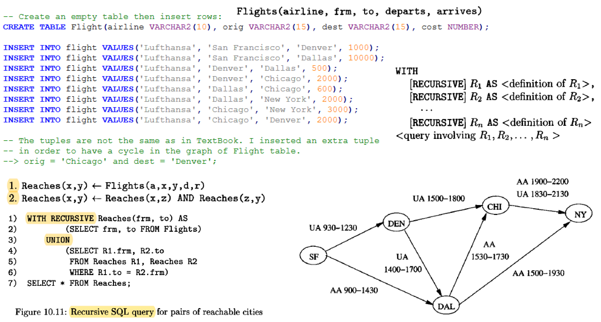

Recursion in SQL and Datalog

-- Create an empty table then insert rows:
CREATE TABLE Flight(airline VARCHAR2(10), orig VARCHAR2(15), dest VARCHAR2(15), cost NUMBER);
INSERT INTO flight VALUES('Lufthansa', 'San Francisco', 'Denver', 1000);
INSERT INTO flight VALUES('Lufthansa', 'San Francisco', 'Dallas', 10000);
INSERT INTO flight VALUES('Lufthansa', 'Denver', 'Dallas', 500);
INSERT INTO flight VALUES('Lufthansa', 'Denver', 'Chicago', 2000);
INSERT INTO flight VALUES('Lufthansa', 'Dallas', 'Chicago', 600);
INSERT INTO flight VALUES('Lufthansa', 'Dallas', 'New York', 2000);
INSERT INTO flight VALUES('Lufthansa', 'Chicago', 'New York', 3000);
INSERT INTO flight VALUES('Lufthansa', 'Chicago', 'Denver', 2000);
-- The tuples are not the same as in TextBook. I inserted an extra tuple
-- in order to have a cycle in the graph of Flight table.
--> orig = 'Chicago' and dest = 'Denver';
Flight Table:
| Airline | Origin | Destination | Cost |
|---|---|---|---|
| Lufthansa | San Francisco | Denver | 1000 |
| Lufthansa | San Francisco | Dallas | 10000 |
| Lufthansa | Denver | Dallas | 500 |
| Lufthansa | Denver | Chicago | 2000 |
| Lufthansa | Dallas | Chicago | 600 |
| Lufthansa | Dallas | New York | 2000 |
| Lufthansa | Chicago | New York | 3000 |
| Lufthansa | Chicago | Denver | 2000 |
DATALOG programs
Datalog is a logical query language (Data Logic). See textbook (Ullman ch. 5.3, 5.4 and 10.2)
Let's see relation Reaches(x,y) which answers the following query.
For what pairs of cities (x, y) is it possible to get from city x to city y by taking one or more flights?
A recursive DATALOG program for the REACHES table:
Reaches(X,Y) <-- Flight(,X,Y,)
Reaches(X,Y) <-- Reaches(X,Z) AND Reaches(Z,Y) AND X <> Y
Most DBMS-s allow only linear recursion in recursive queries, which means: no rule has more than one subgoal that is mutually recursive with the head.
---> if there is a cycle involving R and S, they are mutually recursive
In the previous datalog program the second rule violates this requirement.
The datalog program below contains only linear recursion:
Reaches(X,Y) <-- Flight(,X,Y,)
Reaches(X,Y) <-- Flight(,X,Z,) AND Reaches(Z,Y) AND X <> Y
-- SQL query (Flight is the first edge on the route)
---------
WITH reaches(orig, dest) AS
(
SELECT orig, dest FROM flight
UNION ALL
SELECT flight.orig, reaches.dest FROM flight, reaches
WHERE flight.dest = reaches.orig AND flight.orig <> reaches.dest
)
CYCLE orig, dest SET is_cycle TO 'Y' DEFAULT 'N'
SELECT distinct orig, dest, is_cycle FROM reaches order by 1,2,3;
Results: --------- Chicago Dallas N Chicago Denver N Chicago New York N Chicago New York Y Dallas Chicago N ...
-- Another SQL query (Flight is the last edge on the route)
-----------------
WITH reaches(orig, dest) AS
(
SELECT orig, dest FROM flight
UNION ALL
SELECT reaches.orig, flight.dest FROM reaches, flight
WHERE reaches.dest = flight.orig AND reaches.orig <> flight.dest
)
CYCLE orig, dest SET is_cycle TO 'Y' DEFAULT 'N'
SELECT distinct orig, dest, is_cycle FROM reaches order by 1,2,3;
Results: --------- Chicago Dallas N Chicago Denver N Chicago New York N Dallas Chicago N Dallas Chicago Y Dallas Denver N Dallas New York N Denver Chicago N ...
-- SQL query with non-linear recursion ---> Error message below
-----------------------------------
WITH reaches(orig, dest) AS
(
SELECT orig, dest FROM flight
UNION ALL
SELECT r1.orig, r2.dest FROM reaches r1, reaches r2
WHERE r1.dest = r2.orig AND r1.orig <> r2.dest
)
CYCLE orig,dest SET is_cycle TO 'Y' DEFAULT 'N'
SELECT distinct orig, dest, is_cycle FROM reaches order by 1,2,3;
Error message:
--------------
32490. 00000 - "recursive query name referenced more than once in recursive branch of recursive WITH clause element"
*Cause: The recursive component of the UNION ALL in a recursive WITH clause
element referenced the recursive query name more than once. Only
one reference to the recursive query name is allowed in the
recursive branch of a recursive WITH clause element.
-- SQL query which lists the edges on the route
--------------------------------------------
WITH reaches(orig, dest, edges) AS
(
SELECT orig, dest, orig||'.'||dest FROM flight
UNION ALL
SELECT reaches.orig, flight.dest, reaches.edges||'.'||flight.dest FROM reaches, flight
WHERE reaches.dest = flight.orig AND reaches.orig <> flight.dest
)
CYCLE orig,dest SET is_cycle TO 'Y' DEFAULT 'N'
SELECT distinct orig, dest, edges, is_cycle FROM reaches order by 1,2,3;
Results: --------- Chicago Dallas Chicago.Denver.Dallas N Chicago Denver Chicago.Denver N Chicago New York Chicago.Denver.Dallas.New York N Chicago New York Chicago.New York N Dallas Chicago Dallas.Chicago N Dallas Chicago Dallas.Chicago.Denver.Chicago Y ...
Another recursion in SQL (START WITH, CONNECT BY)
This is a special SQL query type by which we can query tree structures (graphs).
We identify the root of the tree with START WITH condition.
We identify the parent-child relationship with CONNECT BY condition.
In CONNECT BY we have to use the PRIOR keyword to distinguish the column of a parent and a child node (row).
- START WITH -> finds root node (or root nodes)
- CONNECT BY -> relationship between parent and child rows (we should use PRIOR for parent rows)
Steps of evaluation in recursive queries
- START WITH selects root nodes (rows)
- CONNECT BY finds children of roots
- Finds ancestors with a depth first strategy
- WHERE filters rows. If condition is TRUE, record remains in result set.
- Returns rows in preorder traversal.
If a SELECT uses CONNECT BY, take care with JOINS.
We can use several conditions after CONNECT BY. eg.
CONNECT BY PRIOR empno = mgr AND sal > comm
empno -> parent node or record (see PRIOR), other columns -> child node (record)
PRIOR is a unary operator
We must use PRIOR in CONNECT BY clause at least once, otherwise we cannot express the parent-child relationship.
LEVEL pszeudo column
It returns 1 for root nodes, 2 for their children, etc.
-- Example:
--------
SELECT LPAD(' ', 2*(LEVEL-1)) || ename, empno, mgr, job, LEVEL
FROM nikovits.emp
START WITH job='PRESIDENT'
CONNECT BY PRIOR empno = mgr;
Results:
---------
KING 7839 PRESIDENT 1
JONES 7566 7839 MANAGER 2
SCOTT 7788 7566 ANALYST 3
ADAMS 7876 7788 CLERK 4
FORD 7902 7566 ANALYST 3
SMITH 7369 7902 CLERK 4
BLAKE 7698 7839 MANAGER 2
Ordering siblings
ORDER BY -> SIBLINGS [NULLS FIRST | NULLS LAST]
-- Example:
--------
SELECT LPAD(' ', 2*(LEVEL-1)) || ename, empno, mgr, job, LEVEL
FROM nikovits.emp
START WITH job='PRESIDENT'
CONNECT BY PRIOR empno = mgr
ORDER SIBLINGS BY ename; -- [NULLS FIRST | LAST]
Results:
---------
KING 7839 PRESIDENT 1
BLAKE 7698 7839 MANAGER 2
ALLEN 7499 7698 SALESMAN 3
JAMES 7900 7698 CLERK 3
MARTIN 7654 7698 SALESMAN 3
TURNER 7844 7698 SALESMAN 3
WARD 7521 7698 SALESMAN 3
CLARK 7782 7839 MANAGER 2
MILLER 7934 7782 CLERK 3
We can use aggregation and grouping in these queries.
-- Example:
--------
-- Give the sum money of the grandchildren of KAIN.
SELECT SUM(money) -- LPAD(' ', 2*(LEVEL-1)) || name, parent, money
FROM nikovits.parentof
WHERE LEVEL = 3
START WITH name='KAIN'
CONNECT BY PRIOR name = parent;
Results: --------- 683000
-- A new table: ParentOf(name, parent, money, city)
------------------------------------------------
CREATE TABLE ParentOf(name, parent, money, city)
AS SELECT nev, decode(apja, 'NINCS', 'NO', apja), vagyon, varos FROM nikovits.vagyonok;
-- grant select on parentof to public;
-- Compare the following queries and notice the role of PRIOR operator.
-- ABEL's all descendants
SELECT LPAD(' ', 2*(LEVEL-1)) || name, parent, money
FROM nikovits.parentof
WHERE name like '%%' -- we could omit WHERE clause
START WITH name='ABEL'
CONNECT BY PRIOR name = parent;
Results:
---------
ABEL ADAM 280000
JANOS ABEL 190000
PAL JANOS 133000
PETER JANOS 143000
MARCSA PETER 177000
ROBERT JANOS 131000
JOZSEF ABEL 150000
BELA JOZSEF 157000
GIZI BELA 100000
BOTOND JOZSEF 190000
-- ABEL's descendants whose all ancestors have a letter 'A' in his name
SELECT LPAD(' ', 2*(LEVEL-1)) || name, parent, money
FROM nikovits.parentof
WHERE name like '%%'
START WITH name='ABEL'
CONNECT BY PRIOR name = parent and prior name like '%A%';
Results:
---------
ABEL ADAM 280000
JANOS ABEL 190000
PAL JANOS 133000
PETER JANOS 143000
ROBERT JANOS 131000
JOZSEF ABEL 150000
-- ABEL's descendants who and whose all ancestors have a letter 'A' in his name
-- No PRIOR in second condition of CONNECT BY
SELECT LPAD(' ', 2*(LEVEL-1)) || name, parent, money
FROM nikovits.parentof
WHERE name like '%%'
START WITH name='ABEL'
CONNECT BY PRIOR name = parent and name like '%A%';
Results:
---------
ABEL ADAM 280000
JANOS ABEL 190000
PAL JANOS 133000
CONNECT_BY_ROOT operator
At any level we can refer to a column of the root node with this operator.
-- Example:
--------
-- Give the names whose city is the same as ADAM's city.
SELECT LPAD(' ', 2*(LEVEL-1)) || name, parent, city, CONNECT_BY_ROOT city
FROM nikovits.parentof
WHERE city = CONNECT_BY_ROOT city
START WITH name='ADAM'
CONNECT BY PRIOR name = parent;
Results:
---------
ADAM NO Budapest Budapest
ABEL ADAM Budapest Budapest
PETER JANOS Budapest Budapest
MARCSA PETER Budapest Budapest
SAMU BARNA Budapest Budapest
BALAZS KAIN Budapest Budapest
SYS_CONNECT_BY_PATH function: SYS_CONNECT_BY_PATH(column, char)
SYS_CONNECT_BY_PATH concatenates the given column of the nodes from root to actual node.
Second parameter is the delimeter character (or string).
-- Example:
--------
SELECT name, SYS_CONNECT_BY_PATH(name,'.'), SYS_CONNECT_BY_PATH(city,'.')
FROM nikovits.parentof
START WITH name='ADAM'
CONNECT BY PRIOR name = parent;
Results: --------- ADAM .ADAM .Budapest ABEL .ADAM.ABEL .Budapest.Budapest JANOS .ADAM.ABEL.JANOS .Budapest.Budapest.Eger PAL .ADAM.ABEL.JANOS.PAL .Budapest.Budapest.Eger.Szeged PETER .ADAM.ABEL.JANOS.PETER .Budapest.Budapest.Eger.Budapest MARCSA .ADAM.ABEL.JANOS.PETER.MARCSA .Budapest.Budapest.Eger.Budapest.Budapest ROBERT .ADAM.ABEL.JANOS.ROBERT .Budapest.Budapest.Eger.Eger JOZSEF .ADAM.ABEL.JOZSEF .Budapest.Budapest.Szeged ...
If the graph has a cycle we have to use NOCYCLE keyword.
-- Our earlier example about flights (The SQL statements below show how I created your table.)
---------------------------------
CREATE TABLE Flight(airline, orig, dest, cost)
AS SELECT legitarsasag, honnan, hova, koltseg from nikovits.jaratok;
GRANT select on flight to public;
-- or CREATE an empty table then insert rows:
CREATE TABLE Flight(airline VARCHAR2(10), orig VARCHAR2(15), dest VARCHAR2(15), cost NUMBER);
INSERT INTO flight VALUES('Lufthansa', 'San Francisco', 'Denver', 1000);
INSERT INTO flight VALUES('Lufthansa', 'San Francisco', 'Dallas', 10000);
INSERT INTO flight VALUES('Lufthansa', 'Denver', 'Dallas', 500);
INSERT INTO flight VALUES('Lufthansa', 'Denver', 'Chicago', 2000);
INSERT INTO flight VALUES('Lufthansa', 'Dallas', 'Chicago', 600);
INSERT INTO flight VALUES('Lufthansa', 'Dallas', 'New York', 2000);
INSERT INTO flight VALUES('Lufthansa', 'Chicago', 'New York', 3000);
INSERT INTO flight VALUES('Lufthansa', 'Chicago', 'Denver', 2000);
-- There is a cycle in the graph of Flight table.
-- If we delete the last row, there will be no cycle in the graph.
delete from flight where orig='Chicago' and dest='Denver';
-- Example:
--------
-- Which cities can be reached from San Francisco?
SELECT LPAD(' ', 4*level) ||orig, dest, level-1 turnovers
FROM flight
START WITH orig = 'San Francisco'
CONNECT BY PRIOR dest = orig;
Results:
---------
San Francisco Dallas 0
Dallas Chicago 1
Chicago New York 2
Dallas New York 1
San Francisco Denver 0
Denver Chicago 1
Chicago New York 2
Denver Dallas 1
Dallas Chicago 2
Chicago New York 3
Dallas New York 2
-- The previous SELECT doesn't work if there is a cycle in the graph.
-- Use the following instead (-> NOCYCLE):
SELECT LPAD(' ', 4*level) ||orig, dest, level-1 turnovers
FROM flight
START WITH orig = 'San Francisco'
CONNECT BY NOCYCLE PRIOR dest = orig;
Results:
---------
San Francisco Dallas 0
Dallas Chicago 1
Chicago New York 2
Dallas New York 1
San Francisco Denver 0
Denver Chicago 1
Chicago New York 2
Denver Dallas 1
Dallas Chicago 2
Chicago New York 3
Dallas New York 2
Other pszeudo columns
- CONNECT_BY_ISCYCLE: returns 1 if actual row has a child that is an ancestor of it too. (So, it would mean a cycle.)
- CONNECT_BY_ISLEAF: returns 1 if actual row has no child. (or has only child that was an ancestor)
-- Example:
--------
-- List the routes from San Francisco.
SELECT CONNECT_BY_ROOT orig AS first, dest AS final_dest, LEVEL,
SYS_CONNECT_BY_PATH(orig, '->')||'->'||dest "route", -- we concatenate the final dest at the end
CONNECT_BY_ISCYCLE, CONNECT_BY_ISLEAF
FROM flight
START WITH orig='San Francisco'
CONNECT BY NOCYCLE PRIOR dest = orig
ORDER BY LEVEL;
Results: --------- San Francisco Dallas 1 ->San Francisco->Dallas 0 0 San Francisco Denver 1 ->San Francisco->Denver 0 0 San Francisco New York 2 ->San Francisco->Dallas->New York 0 1 San Francisco Chicago 2 ->San Francisco->Dallas->Chicago 0 0 San Francisco Chicago 2 ->San Francisco->Denver->Chicago 0 0 San Francisco Dallas 2 ->San Francisco->Denver->Dallas 0 0 San Francisco New York 3 ->San Francisco->Denver->Chicago->New York 0 1
Let's see our earlier query based on a Datalog query
Reaches(X,Y) <-- Flight(X,Y)
Reaches(X,Y) <-- Flight(X,Z) AND Reaches(Z,Y) AND X <> Y
-- SQL query
---------
WITH reaches(orig, dest) AS
(
SELECT orig, dest FROM flight
UNION ALL
SELECT flight.orig, reaches.dest FROM flight, reaches
WHERE flight.dest = reaches.orig AND flight.orig <> reaches.dest
)
CYCLE orig SET is_cycle TO 'Y' DEFAULT 'N'
SELECT distinct orig, dest FROM reaches order by orig, dest;
Results: --------- Chicago New York Dallas Chicago Dallas New York Denver Chicago Denver Dallas Denver New York San Francisco Chicago San Francisco Dallas San Francisco Denver San Francisco New York
-- Create the Reaches table from Flight table with a CONNECT BY query
------------------------------------------------------------------
SELECT distinct CONNECT_BY_ROOT orig AS orig, dest AS dest
FROM flight
WHERE CONNECT_BY_ROOT orig <> dest
START WITH 1=1 -- we start recursion from each node
CONNECT BY NOCYCLE PRIOR dest = orig
ORDER BY orig, dest;
-- With recursive statement 'WITH' we can compute (produce) new values, but with
-- 'CONNECT BY' we can get only existing values from our table.
-- The query below couldn't be produced by a 'CONNECT BY' recursive query, e.g.
Results: --------- Chicago New York Dallas Chicago Dallas New York Denver Chicago Denver Dallas Denver New York San Francisco Chicago San Francisco Dallas San Francisco Denver San Francisco New York
Produce a relation Factorial(n, val) where val = n!
Factor(X, Y) <-- X=0 AND Y=1
Factor(X, Y) <-- Factor(Z, V) AND X=Z+1 AND Y=X*V AND X < 40
(--> X < 40: not to produce an infinite relation, see "safety" of a DATALOG rule)
WITH factorial(n, val) AS
(
SELECT 0, 1 FROM dual
UNION ALL
SELECT n+1, (n+1)*val FROM factorial
WHERE n < 40
)
CYCLE n SET is_cycle TO 'Y' DEFAULT 'N' -- we can omit this line, there is no cycle
SELECT n, val FROM factorial order by 1;
Results: --------- 0 1 1 1 2 2 3 6 4 24 5 120 6 720 7 5040 8 40320 9 362880 10 3628800 11 39916800 ...